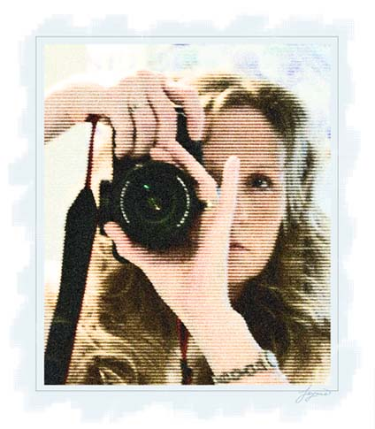

The young reporter Janne is planning to take a photo of a secret
government installation. He needs to obtain evidence of the many
serious crimes against good sense that are being committed there, so
as to create a scandal and possibly win a Pulitzer. Unfortunately,
the base is surrounded by a high fence with high voltage wires running
around. Janne does not want to risk being electrocuted, so he wants to
take a photo from outside the fence. He can bring a tripod as high as
the fence to take a photo, so if he wants he can stand right beside
the fence and take his picture. The secret installation is a convex
polygon. The fence has a form of a circle. Of course Janne wants to
make a photo with maximal possible detail level.
Consider taking a photo of the base from some point P
outside the
fence. Let Q
be the left-most point of the base when viewed from
P
, and let R
be the right-most point of the base when viewed from
P
. Then the view angle of the base at P
is the angle at P
in
the triangle formed by the three points P
, Q
and R
.
The detail level of the photo depends on the view angle of the base at
the point from which the photo is taken. Therefore he wants to find a
point to maximize this angle.
The input file contains several test cases, each of them as described below.
The first line of the input file contains two integer numbers: n
and
r
-- the number of vertices of the polygon and the radius of the
fence (
3 n200
,
1r1000
). The following n
lines contain two real numbers each -- the coordinates of the
vertices of the polygon listed in counterclockwise order. It is
guaranteed that all vertices of the polygon are strictly inside the
fence circle, and that the polygon is convex. The center of the fence
circle is located at the origin, (0, 0)
.
n200
,
1r1000
). The following n
lines contain two real numbers each -- the coordinates of the
vertices of the polygon listed in counterclockwise order. It is
guaranteed that all vertices of the polygon are strictly inside the
fence circle, and that the polygon is convex. The center of the fence
circle is located at the origin, (0, 0)
.
For each test case, write to the output the maximal view angle a
for
the photo (
0a < 2 ), on a line by itself.
Any answer with either absolute or relative error smaller than
10-6
is acceptable.
), on a line by itself.
Any answer with either absolute or relative error smaller than
10-6
is acceptable.
4 2
-1.0 -1.0
1.0 -1.0
1.0 1.0
-1.0 1.0
1.5707963268